Android Auto no painel da tua mota, sem fios
Google Maps, Waze, Spotify e o Assistente no ecrã da mota, a ligar sozinho quando arrancas. E ainda: o combustível mais barato perto de ti, as tuas viagens com recordes, vídeos com a velocidade sobreposta e uma app para o relógio.
Grátis · sem anúncios · código aberto · Android 10 ou superior
Transferência direta da última versão · também no GitHub · novidades da v2.4

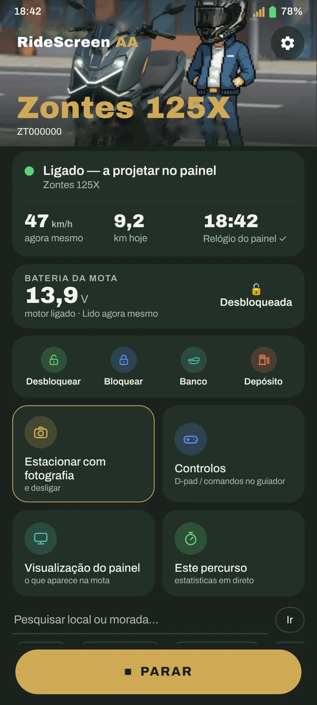
Funciona com a minha mota?
Se o teu painel mostra um código QR para ligar o telemóvel (MotoPlay / EasyConnect), é quase certo que sim. A app é testada todos os dias numa Zontes 125X e parte do OpenCfMoto, que funciona com muitas marcas que usam o mesmo painel.


Novidades da v2.4
A chave no telemóvel, um dashboard com os teus dados no painel e dez idiomas. Grátis, como sempre.
A chave, no telemóvel
Desbloqueia, bloqueia e abre o assento ou o depósito a partir da app, sempre com confirmação; depois verifica como ficou a mota. Nunca com a mota em andamento. Widget «Controlos da mota», desbloquear ao ligar (opcional), bloquear termina a viagem (opcional) e o McuID lê-se com a câmara a partir do QR do painel.
Novo na 2.4Leitor OBD
Com um adaptador Bluetooth ELM327, só leitura: dados disponíveis, códigos de avaria e, em direto, rotações, velocidade, temperatura e acelerador. E leitura contínua enquanto projetas: «motor em funcionamento» vem agora das rotações reais.
Novo na 2.4Dashboard no painel
Em vez do Android Auto, os teus dados no painel: estilos Sport, Racing e Touring, de dia e de noite. Ajustado ao ecrã da 125X, e a pré-visualização é o que vais ver na mota. A escala dos mostradores adapta-se à tua mota. Sem OBD, a velocidade vem do GPS.
Novo na 2.4Viagens com dados do OBD
Reprodução e vídeo da viagem com acelerador e rotações, e juntar percursos (pode desfazer-se).
Novo na 2.4No painel e ao estacionar
Boas-vindas ao começar a projetar, despedida com o resumo do dia e aviso de chuva ao estacionar para as próximas horas onde deixaste a mota.
Novo na 2.4Volume com intercomunicador
Com «Os botões do guiador controlam o Android Auto», agora podes deixar ▲/▼ para o volume.
Novo na 2.4Pulsação do relógio
A pulsação do teu relógio na app (❓ Ajuda), a cada 5 segundos. E a app do relógio, traduzida para todos os idiomas.
Novo na 2.4Dez idiomas
A app e o relógio, completos em espanhol, catalão, inglês, italiano, francês, alemão, português, grego, russo e tailandês.
Novo na 2.4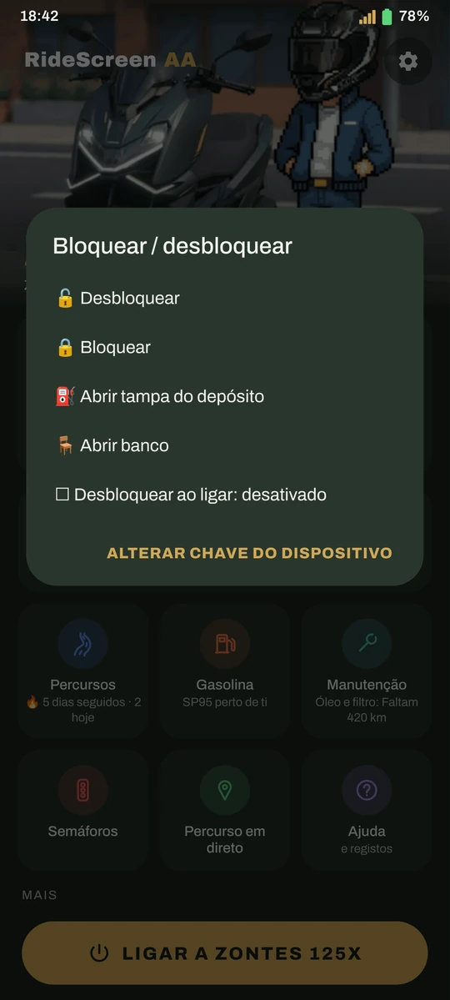
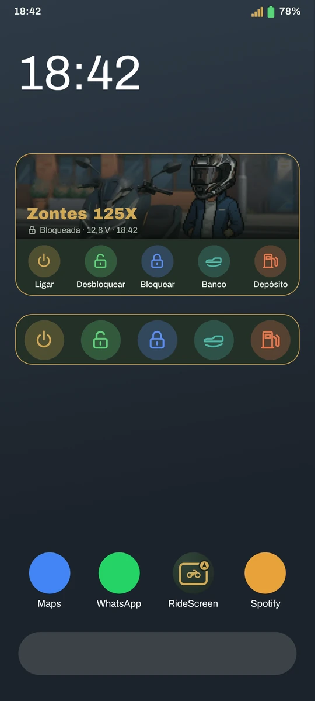
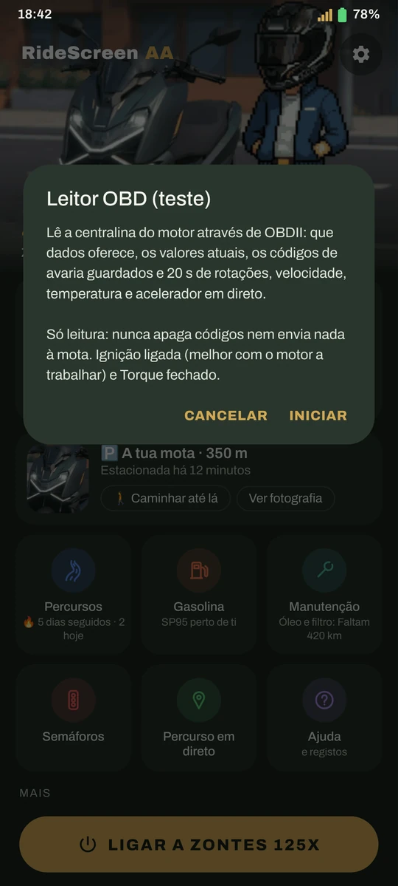
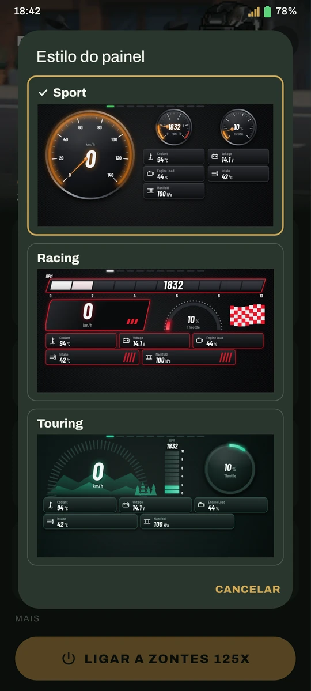
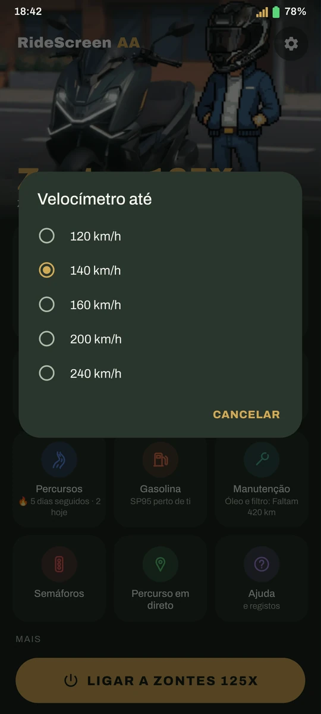
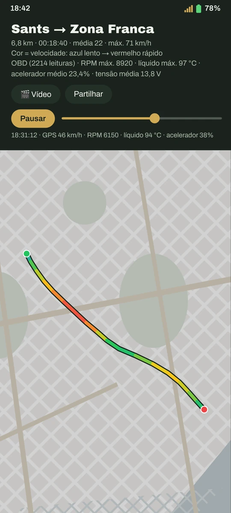
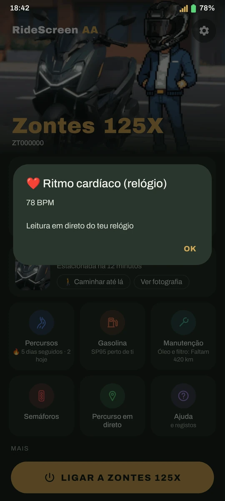
❤️ Obrigado
Agradecimentos especiais da 2.4:
- Melo, por emprestar o iPhone para os testes de iOS
- Inky en Moto — pelos registos que puseram a T350X a funcionar e pelo vídeo sobre a app (youtube.com/@inkyenmoto)
- Luis Gil, pela ajuda com o leitor OBD
- Todos os testers das versões de teste da 2.4
Aos apoiantes no Ko-fi, obrigado!
- Francisco Javier S.
- José Antonio R.
- Raul
- Luis Gil
- INKY
- Juanma M.
- Alfonsomicra
- Isra
- Dionisios S.
- José Manuel
- Karsten
- Francesc Xavier M.
- Jon
- Alberto
- Apoiantes anónimos
Muito mais do que Android Auto
Liga-se sozinha
Ligas a mota e o Android Auto aparece no painel, com o telemóvel no bolso.
Imagem à medida
Ajusta a imagem ao teu painel com setas, vendo o resultado em direto na mota.
"Ok Google"
Fala com o Assistente pelo intercomunicador, pelo relógio ou pelos óculos.
Combustível mais barato
Preço oficial da gasolina 95 perto de ti, e o Maps leva-te lá. Só em Espanha.
As tuas viagens
Cada saída é guardada sozinha: percurso por velocidade, mapa de calor, recordes e troféus.
Vídeo da viagem
Junta os teus clips (Ray-Ban Meta, câmara de ação, telemóvel) com mapa, velocidade e hora por cima.
Os teus semáforos
Onde paras mais, quanto tempo esperas e que caminho é mesmo mais rápido.
Onde estacionei
Guarda o sítio e uma foto; a bússola do relógio leva-te até à mota.
Manutenção
Óleo, correia, inspeção… com aviso quando chega a altura, e o teu consumo real.
Deteção de quedas
Alarme no telemóvel e no relógio e, se não responderes, um SMS com a tua localização.
ExperimentalA chave, no telemóvel
Desbloqueia, bloqueia e abre o assento ou o depósito a partir da app, sempre com confirmação.
Novo na 2.4Widget «Ligar»
Um toque no ecrã principal e liga-se à tua mota, com a foto da tua Garagem.
Novo na 2.3Modo pendura
O teu pendura escolhe o destino e a música e controla o Android Auto a partir do telemóvel dele.
Novo na 2.3Viagens a salvo
A viagem é guardada a cada 30 s, mesmo que a app se feche. E podes importar rotas GPX.
Novo na 2.3É assim
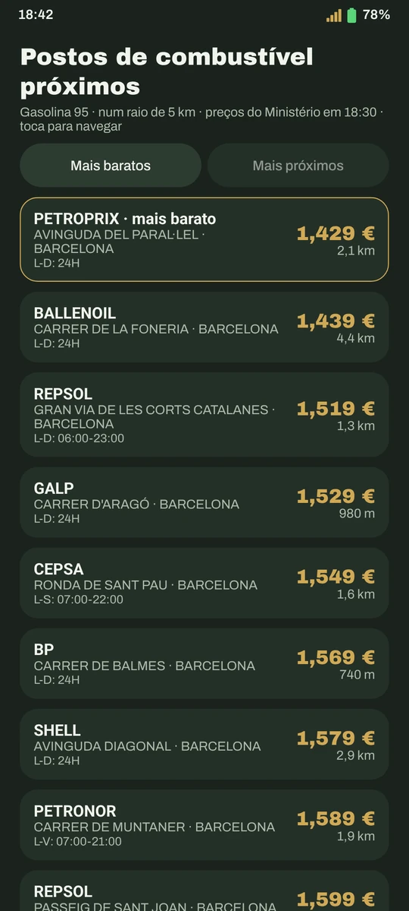
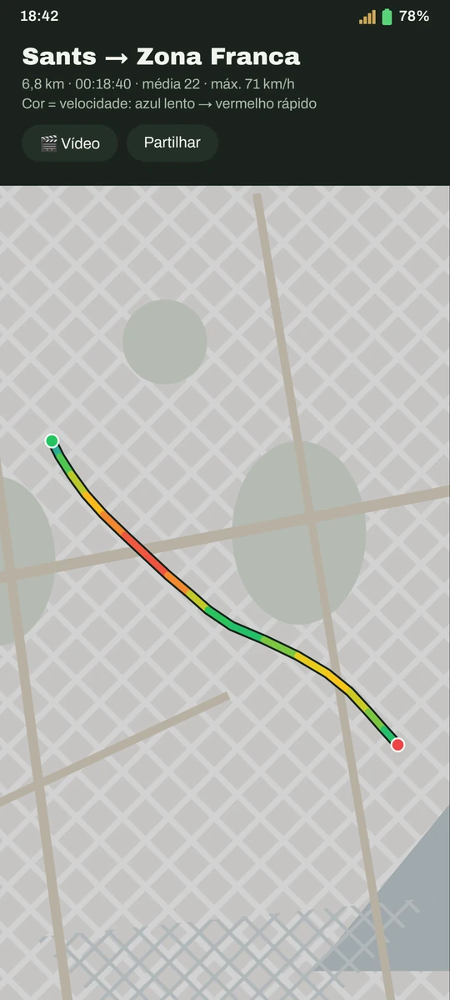
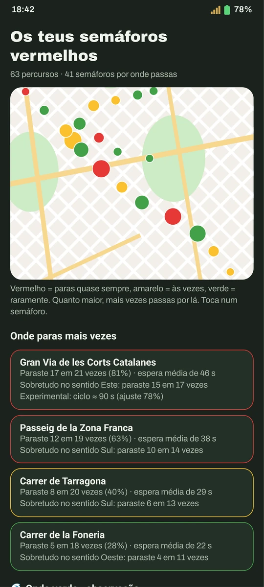
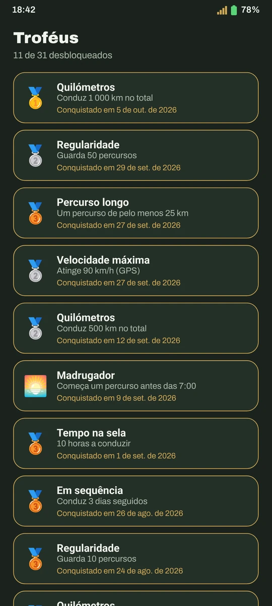
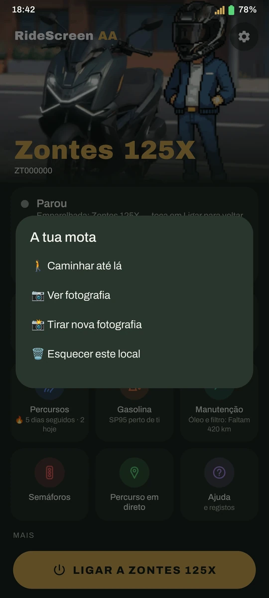
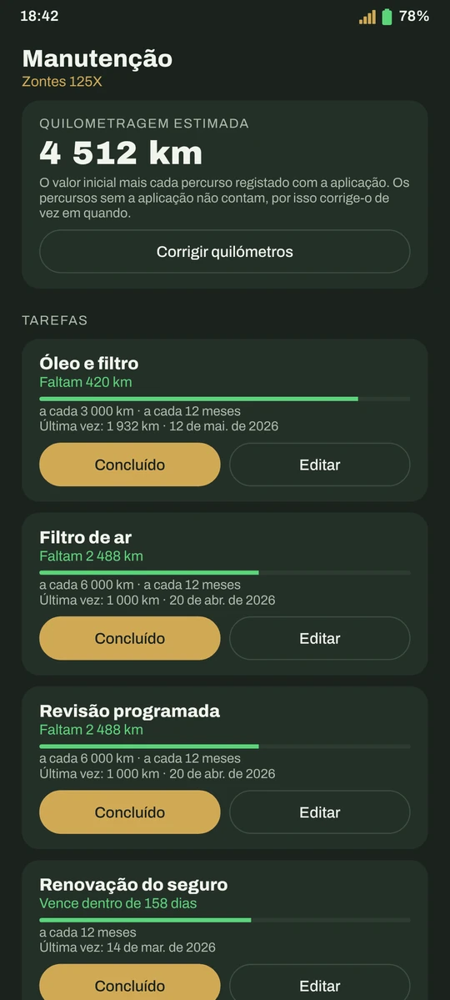
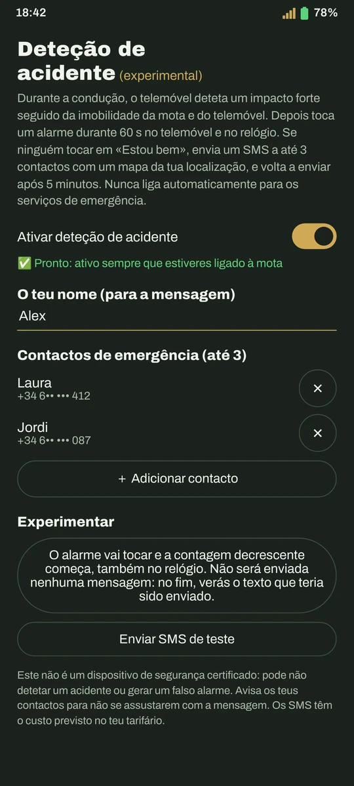

Ajuste da imagem, em direto no painel
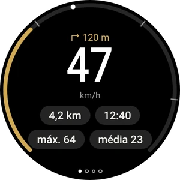
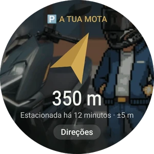
App para relógios Wear OS · guia do relógio
Pronta em 10 minutos
Descarrega o APK
Com o botão acima, direto (ou a partir do GitHub). As versões seguintes, é a própria app que tas oferece.
Prepara o Android Auto
Uma definição única no Android Auto. O guia mostra-te como, com capturas.
Lê o QR do painel
E toca em Ligar. A partir daí, liga-se sozinha quando arrancas a mota.
Perguntas frequentes
É uma app oficial da Zontes?
Não. É um projeto independente, feito por um motociclista para a sua Zontes e partilhado com a comunidade. Não está associado à Zontes, à CFMoto, à Carbit nem à Google.
Quanto custa?
Nada. É grátis, sem anúncios nem subscrições, e o código é aberto (licença AGPL-3.0). Se te for útil, podes pagar-me um café.
Porque não está no Google Play?
Está a caminho. Entretanto, descarrega-se a partir deste site; se o Play Protect avisar, é porque ainda não conhece a app: Mais detalhes → Instalar mesmo assim.
E os meus dados?
As tuas viagens, fotos e definições ficam no telemóvel: sem contas, sem nuvem. A app só envia relatórios de erros anónimos (nada que te identifique) para os podermos corrigir, e podes desativá-los.
Preciso de dados móveis?
Para os mapas, a música em streaming e os preços dos combustíveis, sim, tal como o Android Auto no carro. A ligação à mota usa o Wi‑Fi da própria mota.
Algo não funciona, o que faço?
Consulta o guia, que tem os erros mais habituais. Se continuar, na app: ❓ Ajuda → Partilhar registos, e envia-o a contar o que aconteceu.